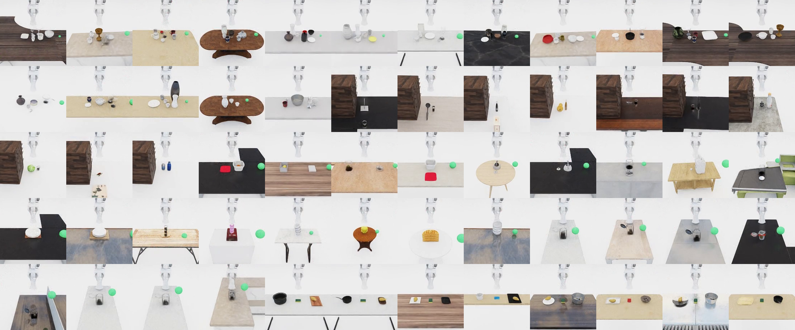

ManiGuard¶
ManiGuard is a Python package on top of BEHAVIOR-1K / OmniGibson that adds LTL safety checking, task-generation pipelines, teleop + scripted data collection, VLA supervised fine-tuning, and policy evaluation for robotic manipulation in simulated households. Reinforcement-learning training is under development.

A glimpse of 60 base tasks (opposite-camera view), sampled across the 6 ManiGuard-Bench families.
Explore the docs¶
-
Install the
behaviorconda env and the BEHAVIOR datasets. -
Architecture, the env layer, the LTL safety system, and OmniGibson patches.
-
The 6 bench families (clutter, cabinet, stack, jar, dusty, lid) — and how to add your own.
-
SO-101 / GELLO teleop, plus the scripted datagen pipeline for SFT demos.
-
The model-agnostic joint dataset + per-model recipes (openpi / GR00T / SmolVLA), and collection↔eval consistency.
-
Websocket policy eval, goal checking, and benchmark preparation.
-
The scripted 6-family demo-collection pipeline + RAW → LeRobot conversion.